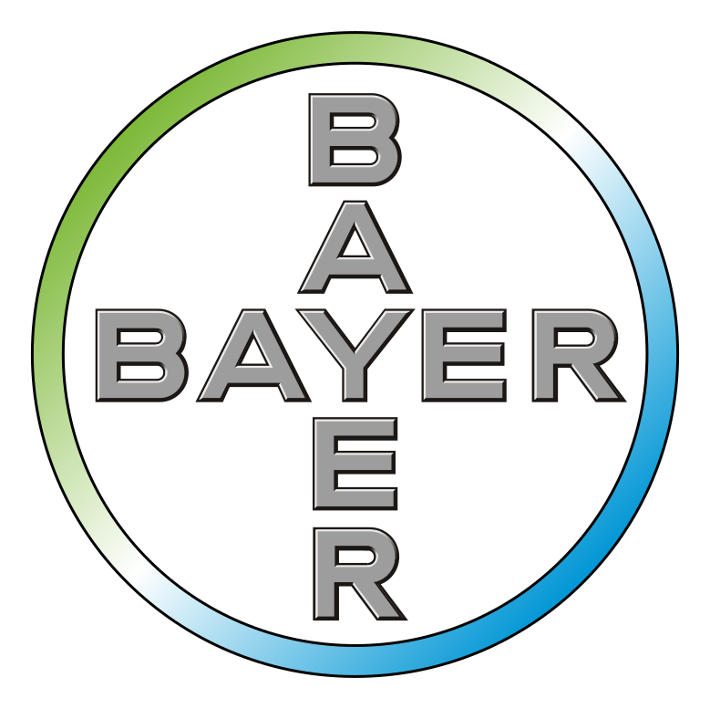

<link rel="import" href="../../../bower_components/paper-header-panel/paper-header-panel.html">
<link rel="import" href="../../../bower_components/paper-toolbar/paper-toolbar.html">
<link rel="import" href="../../../bower_components/iron-flex-layout/iron-flex-layout.html">
<link rel="import" href="../../../bower_components/iron-icons/iron-icons.html">
<link rel="import" href="../../../bower_components/paper-input/paper-input.html">
<link rel="import" href="../../../bower_components/paper-button/paper-button.html">
<link rel="import" href="../../../bower_components/paper-material/paper-material.html">
<link rel="import" href="../../../bower_components/paper-icon-button/paper-icon-button.html">
<link rel="import" href="../../../bower_components/paper-checkbox/paper-checkbox.html">
<link rel="import" href="../../../bower_components/paper-radio-button/paper-radio-button.html">
<link rel="import" href="../../../bower_components/paper-radio-group/paper-radio-group.html">
<link rel="import" href="../../../bower_components/neon-animation/neon-animated-pages.html">
<link rel="import" href="../../../bower_components/neon-animation/neon-animatable.html">
<link rel="import" href="../../../bower_components/neon-animation/neon-animations.html">
<link rel="import" href="../../../bower_components/paper-fab/paper-fab.html">
<link rel="import" href="../../../bower_components/paper-styles/color.html">
<link rel="stylesheet" href="../../../bower_components/paper-styles/color.html">

<dom-module id="question-list">
  <template>

    <style>
      :host {
        display: block;
      }

      .main-container{
        @apply(--layout-fullbleed);
        @apply(--layout-vertical);
      }

      ul {
        padding:1.5% 12px;
      }

      ul li{
        list-style-type: none;
        margin-bottom: 3%;

      }

      paper-fab.gray {
  			--paper-fab-background: var(--paper-grey-500);
  			--paper-fab-keyboard-focus-background: var(--paper-grey-500);
  		}

      paper-fab.blue {
  			--paper-fab-background: var(--paper-light-blue-500);
  			--paper-fab-keyboard-focus-background: var(--paper-light-blue-500);
  		}

  		paper-toolbar {
  			--paper-toolbar-background: var(--paper-light-blue-500);
  		}

      .bayerLogo{
        position: absolute;
        right:2%;
        top:30%;
        width:90px;
        height:90px;
        background-color: #fff;
        border-radius: 50%;
        box-shadow: 2px 2px 5px #333;
      }

      neon-animated-pages {
        @apply(--layout-flex);
        @apply(--layout-vertical);
      }

      neon-animatable label{
        display: block;
        text-align: center;
      }

      .container {
        @apply(--layout-flex);
        padding:2%;
      }

      .horizontal {
        @apply(--layout-horizontal);
      }
      .flexchild {
        @apply(--layout-flex);
      }
    </style>

    <!-- paper-header-panel must have an explicit height -->
    <div class="main-container">
      <div>
        <paper-toolbar class="medium-tall">
          <div class="bottom">
            <span class="middle title">Bayer: Science For A Better Life</span>
          </div>
          
        </paper-toolbar>
      </div>
      <div class="container">
        <form is="iron-form" id="form" class="flex" method="post" action="/form/handler">
          <input type="hidden" name="curdom" id="curdom" value="">
            <neon-animated-pages id="pages" selected="[[selected]]" entry-animation="[[entryAnimation]]" exit-animation="[[exitAnimation]]">
              <neon-animatable>
                <label>Caro Vet, stiamo conducendo un’indagine su come il Vet valuta i prodotti antiparassitari esterni in vista di strategie (di comunicazione?) future. Ti va di partecipare ad un breve questionario? (Anonimo, riservato …)</label>
              </neon-animatable>
              <neon-animatable>
                <label>Spot on, Collari e Compresse: quali formulazioni preferisci in ordine di preferenza per la protezione del cane dai parassiti esterni?</label>
                <ul>
                  <li><paper-input class="short" label="Spot on" 		type="number" id="ris_11"></paper-input></li>
                  <li><paper-input class="short" label="Collari" 		type="number"id="ris_11"></paper-input></li>
                  <li><paper-input class="short" label="Compresse" 	type="number"id=""></paper-input></li>
                </ul>
              </neon-animatable>
              <neon-animatable>
                <label>La domanda da fare come risposte multiple?</label>
                <ul>
                  <li><paper-checkbox>Risposta 1</paper-checkbox></li>
                  <li><paper-checkbox>Risposta 2</paper-checkbox></li>
                  <li><paper-checkbox>Risposta 3</paper-checkbox></li>
                </ul>
              </neon-animatable>
              <neon-animatable>
                <label>La domanda da fare come risposte singole?</label><br />
                <paper-radio-group>
                  <paper-radio-button name="first">First</paper-radio-button><br />
                  <paper-radio-button name="second">Second</paper-radio-button><br />
                  <paper-radio-button name="third">Third</paper-radio-button>
                </paper-radio-group>
              </neon-animatable>
              <neon-animatable>
                <label>FINE<br />Fai il submit!</label>
              </neon-animatable>
            </neon-animated-pages>
        </form>
      </div>
      <div>
        <div class="horizontal" style="padding:2%;">
          <div><paper-fab disabled="[[isPrevDisabled]]" icon="arrow-back" title="Prev" class="gray" on-tap="onPrevTap"></paper-fab></div>
          <div class="flexchild"></div>
          <div><paper-fab disabled="[[isNextDisabled]]" icon="arrow-forward" title="Next" class="blue" on-tap="onNextTap"></paper-fab></div>
        </div>
      </div>
    </div>

  </template>
</dom-module>

<script>
  Polymer({
    is: 'question-list',
    properties: {
      selected : {
        type : Number,
        notify : true,
        value : 0
      },
      totalQuestions : {
        type : Number,
        notify : true,
        value : 0
      },
      isPrevDisabled : {
        type : Boolean,
        computed : 'isEquals(selected, 0)'
      },
      isNextDisabled : {
        type : Boolean,
        computed : 'isEquals(selected, totalQuestions)'
      },
      entryAnimation : {
        type : String,
        notify : true
      },
      exitAnimation : {
        type : String,
        notify : true
      }
    },

    ready: function() {
      this.totalQuestions = this.querySelectorAll('neon-animatable').length - 1;
    },

    isEquals : function(value, valueToEqual){
      return value === valueToEqual;
    },

    onPrevTap : function() {
      this.entryAnimation = 'slide-from-left-animation';
      this.exitAnimation = 'slide-right-animation';
      if (this.selected !== 0){
        this.selected = this.selected - 1;
      }
    },

    onNextTap : function() {
      this.entryAnimation = 'slide-from-right-animation';
      this.exitAnimation = 'slide-left-animation';
      if (this.selected !== this.totalQuestions){
        this.selected = this.selected + 1;
      }
    }
  });
</script>
